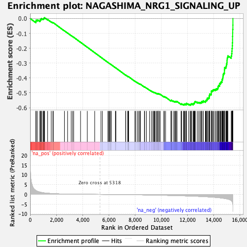
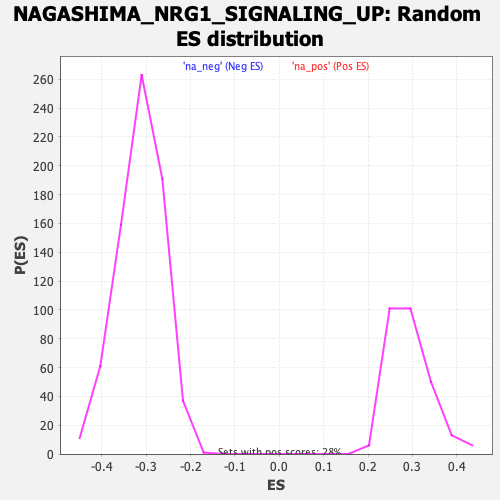

| | | Dataset | DE_genes |
| Phenotype | NoPhenotypeAvailable |
| Upregulated in class | na_neg |
| GeneSet | NAGASHIMA_NRG1_SIGNALING_UP |
| Enrichment Score (ES) | -0.5837274 |
| Normalized Enrichment Score (NES) | -1.8716791 |
| Nominal p-value | 0.0 |
| FDR q-value | 0.0024140424 |
| FWER p-Value | 0.01 |
Table: GSEA Results Summary

Fig 1: Enrichment plot: NAGASHIMA_NRG1_SIGNALING_UP
Profile of the Running ES Score & Positions of GeneSet Members on the Rank Ordered List
| PROBE | GENE SYMBOL | GENE_TITLE | RANK IN GENE LIST | RANK METRIC SCORE | RUNNING ES | CORE ENRICHMENT | | 1 | CYP24A1 | | | 436 | 1.991 | -0.0184 | No |
| 2 | SOCS1 | | | 462 | 1.885 | -0.0104 | No |
| 3 | STK24 | | | 566 | 1.545 | -0.0093 | No |
| 4 | NFIL3 | | | 745 | 1.204 | -0.0148 | No |
| 5 | SERPINB8 | | | 779 | 1.142 | -0.0111 | No |
| 6 | GDF15 | | | 783 | 1.135 | -0.0056 | No |
| 7 | HIC2 | | | 847 | 1.047 | -0.0044 | No |
| 8 | PLAUR | | | 867 | 1.013 | -0.0005 | No |
| 9 | KDM6B | | | 979 | 0.885 | -0.0032 | No |
| 10 | TNFRSF11B | | | 1024 | 0.824 | -0.0019 | No |
| 11 | F2RL1 | | | 1052 | 0.800 | 0.0004 | No |
| 12 | HILPDA | | | 1065 | 0.784 | 0.0036 | No |
| 13 | TNFRSF21 | | | 1102 | 0.753 | 0.0051 | No |
| 14 | GATA6 | | | 1334 | 0.597 | -0.0070 | No |
| 15 | DUSP2 | | | 1611 | 0.469 | -0.0226 | No |
| 16 | PDLIM5 | | | 1736 | 0.413 | -0.0286 | No |
| 17 | IRS2 | | | 1773 | 0.400 | -0.0290 | No |
| 18 | CEBPB | | | 2617 | 0.186 | -0.0831 | No |
| 19 | ZYX | | | 2857 | 0.155 | -0.0979 | No |
| 20 | ADM | | | 3133 | 0.128 | -0.1152 | No |
| 21 | REL | | | 3241 | 0.119 | -0.1216 | No |
| 22 | PMAIP1 | | | 3321 | 0.113 | -0.1262 | No |
| 23 | EDN1 | | | 3846 | 0.079 | -0.1600 | No |
| 24 | LAMC2 | | | 4361 | 0.049 | -0.1934 | No |
| 25 | FLRT3 | | | 4928 | 0.020 | -0.2302 | No |
| 26 | IFRD1 | | | 5404 | -0.004 | -0.2612 | No |
| 27 | IER5 | | | 5514 | -0.010 | -0.2683 | No |
| 28 | ZFP36 | | | 5936 | -0.035 | -0.2956 | No |
| 29 | CXCR4 | | | 5988 | -0.038 | -0.2988 | No |
| 30 | PFKFB3 | | | 6050 | -0.042 | -0.3025 | No |
| 31 | LAMA3 | | | 6108 | -0.047 | -0.3060 | No |
| 32 | VCL | | | 6120 | -0.048 | -0.3065 | No |
| 33 | ISG20 | | | 6203 | -0.053 | -0.3116 | No |
| 34 | MAP3K8 | | | 6504 | -0.073 | -0.3308 | No |
| 35 | RARA | | | 6548 | -0.075 | -0.3332 | No |
| 36 | PSME4 | | | 7284 | -0.135 | -0.3806 | No |
| 37 | TUFT1 | | | 7299 | -0.136 | -0.3808 | No |
| 38 | TIPARP | | | 7448 | -0.148 | -0.3897 | No |
| 39 | NAP1L1 | | | 7475 | -0.150 | -0.3907 | No |
| 40 | ZNF365 | | | 7511 | -0.153 | -0.3922 | No |
| 41 | EGR4 | | | 7514 | -0.153 | -0.3915 | No |
| 42 | FBXO41 | | | 7988 | -0.197 | -0.4214 | No |
| 43 | EGR3 | | | 8052 | -0.204 | -0.4245 | No |
| 44 | SPRED2 | | | 8178 | -0.216 | -0.4316 | No |
| 45 | ALOXE3 | | | 8265 | -0.225 | -0.4360 | No |
| 46 | LYPD3 | | | 8364 | -0.236 | -0.4412 | No |
| 47 | DUSP4 | | | 8386 | -0.238 | -0.4414 | No |
| 48 | NR4A3 | | | 8408 | -0.240 | -0.4416 | No |
| 49 | TOP1 | | | 8718 | -0.276 | -0.4603 | No |
| 50 | TUBB2A | | | 8743 | -0.279 | -0.4605 | No |
| 51 | CDC42EP3 | | | 8878 | -0.295 | -0.4677 | No |
| 52 | DNAJB1 | | | 9107 | -0.323 | -0.4810 | No |
| 53 | DUSP5 | | | 9248 | -0.341 | -0.4884 | No |
| 54 | DDIT3 | | | 9361 | -0.354 | -0.4939 | No |
| 55 | IL6R | | | 9423 | -0.362 | -0.4961 | No |
| 56 | EPPK1 | | | 9476 | -0.369 | -0.4976 | No |
| 57 | LDLR | | | 9519 | -0.375 | -0.4984 | No |
| 58 | EIF5 | | | 9608 | -0.390 | -0.5022 | No |
| 59 | MCL1 | | | 9684 | -0.402 | -0.5050 | No |
| 60 | TNFRSF12A | | | 9708 | -0.406 | -0.5045 | No |
| 61 | FHL2 | | | 9779 | -0.414 | -0.5070 | No |
| 62 | BCL10 | | | 9781 | -0.414 | -0.5049 | No |
| 63 | SNAI2 | | | 9856 | -0.425 | -0.5076 | No |
| 64 | TGFB2 | | | 9925 | -0.436 | -0.5098 | No |
| 65 | FUT4 | | | 10204 | -0.478 | -0.5255 | No |
| 66 | CTH | | | 10244 | -0.483 | -0.5256 | No |
| 67 | CAMK2G | | | 10335 | -0.496 | -0.5290 | No |
| 68 | ETS2 | | | 10744 | -0.559 | -0.5528 | No |
| 69 | FBXL12 | | | 10767 | -0.563 | -0.5514 | No |
| 70 | HOMER1 | | | 10782 | -0.564 | -0.5494 | No |
| 71 | ZFAND5 | | | 10926 | -0.587 | -0.5558 | No |
| 72 | SRF | | | 11024 | -0.602 | -0.5591 | No |
| 73 | EGLN3 | | | 11075 | -0.611 | -0.5592 | No |
| 74 | AKIRIN1 | | | 11128 | -0.621 | -0.5595 | No |
| 75 | AVPI1 | | | 11141 | -0.624 | -0.5571 | No |
| 76 | CCNL1 | | | 11208 | -0.637 | -0.5582 | No |
| 77 | KBTBD2 | | | 11515 | -0.702 | -0.5746 | No |
| 78 | TRA2B | | | 11550 | -0.709 | -0.5732 | No |
| 79 | HBEGF | | | 11688 | -0.740 | -0.5784 | No |
| 80 | NR4A2 | | | 11743 | -0.749 | -0.5781 | No |
| 81 | AREG | | | 11769 | -0.755 | -0.5759 | No |
| 82 | RGS2 | | | 11833 | -0.769 | -0.5761 | No |
| 83 | ATF3 | | | 11908 | -0.787 | -0.5769 | No |
| 84 | C3orf52 | | | 11914 | -0.789 | -0.5733 | No |
| 85 | FERMT2 | | | 11928 | -0.791 | -0.5701 | No |
| 86 | KLF6 | | | 12090 | -0.825 | -0.5764 | No |
| 87 | NDEL1 | | | 12203 | -0.855 | -0.5794 | Yes |
| 88 | JOSD1 | | | 12258 | -0.867 | -0.5785 | Yes |
| 89 | TES | | | 12276 | -0.871 | -0.5752 | Yes |
| 90 | AQP3 | | | 12310 | -0.879 | -0.5729 | Yes |
| 91 | KLF2 | | | 12434 | -0.913 | -0.5763 | Yes |
| 92 | PPP1R15A | | | 12439 | -0.913 | -0.5719 | Yes |
| 93 | SPATA2L | | | 12495 | -0.926 | -0.5708 | Yes |
| 94 | VEGFA | | | 12537 | -0.937 | -0.5687 | Yes |
| 95 | PALLD | | | 12552 | -0.942 | -0.5648 | Yes |
| 96 | MAP3K14 | | | 12556 | -0.942 | -0.5602 | Yes |
| 97 | NEDD9 | | | 12600 | -0.953 | -0.5582 | Yes |
| 98 | HERC4 | | | 12747 | -0.996 | -0.5627 | Yes |
| 99 | TRIB1 | | | 12849 | -1.028 | -0.5640 | Yes |
| 100 | ID1 | | | 12950 | -1.061 | -0.5652 | Yes |
| 101 | SLCO4A1 | | | 13029 | -1.084 | -0.5648 | Yes |
| 102 | WEE1 | | | 13085 | -1.101 | -0.5628 | Yes |
| 103 | TOB2 | | | 13092 | -1.103 | -0.5575 | Yes |
| 104 | PPRC1 | | | 13196 | -1.136 | -0.5585 | Yes |
| 105 | LIF | | | 13208 | -1.142 | -0.5534 | Yes |
| 106 | PER2 | | | 13368 | -1.202 | -0.5577 | Yes |
| 107 | DUSP8 | | | 13399 | -1.214 | -0.5535 | Yes |
| 108 | PHLDA2 | | | 13430 | -1.223 | -0.5492 | Yes |
| 109 | PCF11 | | | 13494 | -1.251 | -0.5470 | Yes |
| 110 | MIR22HG | | | 13514 | -1.258 | -0.5418 | Yes |
| 111 | FOSL1 | | | 13518 | -1.260 | -0.5356 | Yes |
| 112 | YRDC | | | 13600 | -1.293 | -0.5343 | Yes |
| 113 | NPC1 | | | 13659 | -1.315 | -0.5314 | Yes |
| 114 | CASP9 | | | 13664 | -1.316 | -0.5250 | Yes |
| 115 | SIK1 | | | 13666 | -1.317 | -0.5184 | Yes |
| 116 | HES1 | | | 13702 | -1.332 | -0.5139 | Yes |
| 117 | LRRC15 | | | 13705 | -1.333 | -0.5073 | Yes |
| 118 | GTPBP4 | | | 13815 | -1.385 | -0.5073 | Yes |
| 119 | SOWAHC | | | 13824 | -1.389 | -0.5008 | Yes |
| 120 | ZNF331 | | | 13825 | -1.389 | -0.4937 | Yes |
| 121 | MAP2K3 | | | 13830 | -1.392 | -0.4869 | Yes |
| 122 | CLCF1 | | | 13913 | -1.431 | -0.4850 | Yes |
| 123 | BHLHE40 | | | 13955 | -1.446 | -0.4803 | Yes |
| 124 | JUNB | | | 14030 | -1.485 | -0.4776 | Yes |
| 125 | ARPC5L | | | 14139 | -1.558 | -0.4768 | Yes |
| 126 | TNFRSF10B | | | 14209 | -1.606 | -0.4731 | Yes |
| 127 | CSNK1D | | | 14298 | -1.659 | -0.4704 | Yes |
| 128 | ARG2 | | | 14331 | -1.678 | -0.4640 | Yes |
| 129 | CLDN4 | | | 14346 | -1.684 | -0.4563 | Yes |
| 130 | PWP2 | | | 14384 | -1.706 | -0.4501 | Yes |
| 131 | DUSP10 | | | 14462 | -1.761 | -0.4462 | Yes |
| 132 | EZR | | | 14463 | -1.761 | -0.4372 | Yes |
| 133 | SEMA3B | | | 14527 | -1.808 | -0.4321 | Yes |
| 134 | EPHA2 | | | 14571 | -1.846 | -0.4256 | Yes |
| 135 | ARC | | | 14641 | -1.912 | -0.4203 | Yes |
| 136 | PLEKHO2 | | | 14643 | -1.913 | -0.4107 | Yes |
| 137 | INPP1 | | | 14684 | -1.956 | -0.4034 | Yes |
| 138 | GEM | | | 14702 | -1.971 | -0.3945 | Yes |
| 139 | SERTAD3 | | | 14720 | -1.990 | -0.3854 | Yes |
| 140 | JMJD6 | | | 14731 | -1.999 | -0.3759 | Yes |
| 141 | ID3 | | | 14771 | -2.037 | -0.3681 | Yes |
| 142 | SGK1 | | | 14823 | -2.084 | -0.3609 | Yes |
| 143 | IER3 | | | 14825 | -2.088 | -0.3503 | Yes |
| 144 | TUBB6 | | | 14829 | -2.090 | -0.3399 | Yes |
| 145 | KLF10 | | | 14843 | -2.100 | -0.3301 | Yes |
| 146 | DST | | | 14934 | -2.207 | -0.3247 | Yes |
| 147 | DUSP1 | | | 14967 | -2.266 | -0.3153 | Yes |
| 148 | MYC | | | 14984 | -2.284 | -0.3047 | Yes |
| 149 | AEN | | | 15017 | -2.329 | -0.2950 | Yes |
| 150 | GADD45B | | | 15024 | -2.338 | -0.2835 | Yes |
| 151 | NAB2 | | | 15031 | -2.342 | -0.2720 | Yes |
| 152 | GADD45A | | | 15049 | -2.381 | -0.2610 | Yes |
| 153 | GAL | | | 15088 | -2.450 | -0.2510 | Yes |
| 154 | GATA2 | | | 15342 | -3.125 | -0.2517 | Yes |
| 155 | MAFF | | | 15377 | -3.396 | -0.2366 | Yes |
| 156 | NR4A1 | | | 15395 | -3.552 | -0.2197 | Yes |
| 157 | IER2 | | | 15405 | -3.617 | -0.2019 | Yes |
| 158 | SFN | | | 15427 | -3.952 | -0.1832 | Yes |
| 159 | EGR1 | | | 15434 | -4.010 | -0.1632 | Yes |
| 160 | PER1 | | | 15444 | -4.204 | -0.1424 | Yes |
| 161 | ITPKC | | | 15445 | -4.370 | -0.1202 | Yes |
| 162 | SPHK1 | | | 15452 | -4.522 | -0.0976 | Yes |
| 163 | JUN | | | 15456 | -4.705 | -0.0739 | Yes |
| 164 | FOSB | | | 15469 | -5.930 | -0.0445 | Yes |
| 165 | FOS | | | 15471 | -8.771 | -0.0000 | Yes |
Table: GSEA details [plain text format]

Fig 2: NAGASHIMA_NRG1_SIGNALING_UP: Random ES distribution
Gene set null distribution of ES for NAGASHIMA_NRG1_SIGNALING_UP